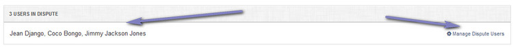
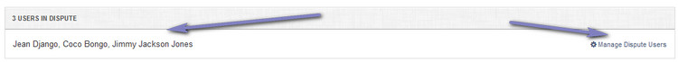

View Dispute
Overview
Enables viewing of dispute. Note that the dispute screen is the same as the view ticket screen, with a few differences detailed below.
Create Ticket
Appears on the top bar. Its the reverse of "Create Dispute".
This reverts the ticket back to a standard ticket and removes any users that were added to the dispute.
This reverts the ticket back to a standard ticket and removes any users that were added to the dispute.
Manage Dispute Users
Once a ticket has been turned into a dispute, you need to add other users to the dispute, so they can all view the same ticket. Click the "Manage Dispute Users" link to
manage dispute users. The names of users in dispute (including original ticket starter) will be shown.


Merge Ticket
The merge ticket option is not available for disputes.